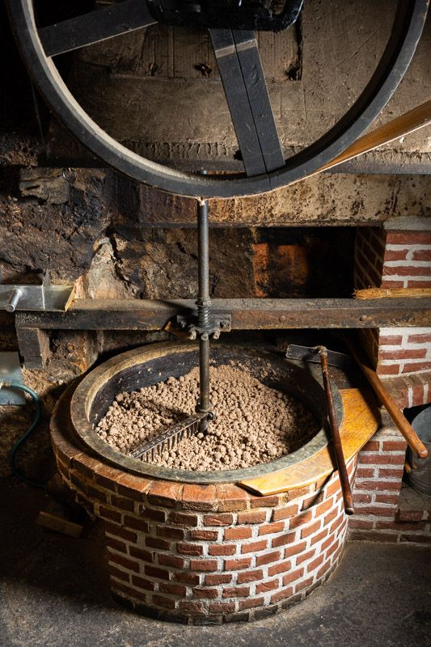
Le broyage
Les fruits secs sont broyés à la meule de grès.
Depuis 1750, au cœur de Saint-Céré
Huiles vierges de noix et de noisette, purées de fruits secs sans huile ni sucre ajoutés : tout est fabriqué ici, à l'ancienne, à la meule de grès et à la presse.
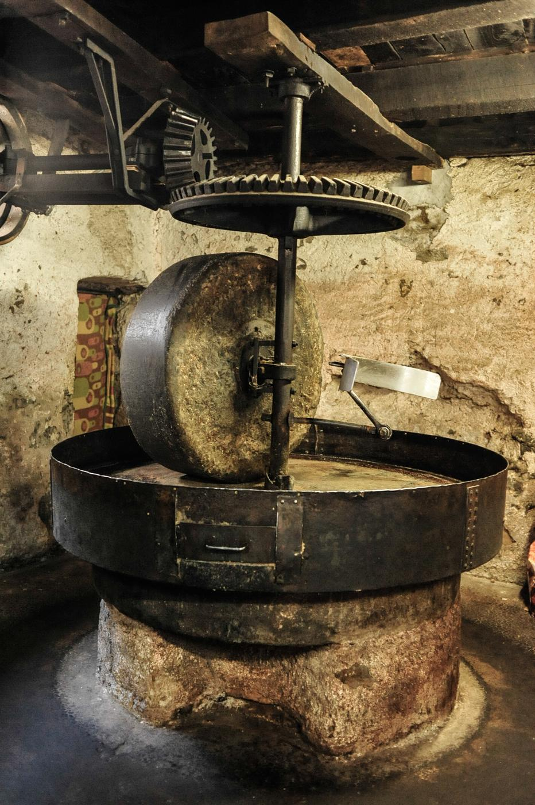
Notre savoir-faire
Fabrication artisanale d'huiles de noix et de noisette selon une méthode traditionnelle, et transformation de fruits secs en purées naturelles.

Les fruits secs sont broyés à la meule de grès.
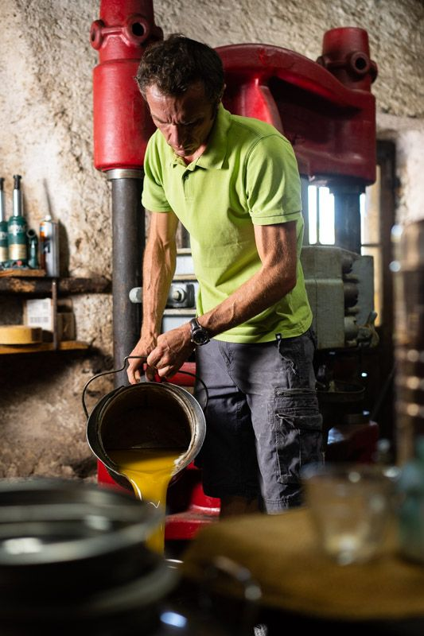
La pâte obtenue est légèrement grillée à la poêle en fonte.
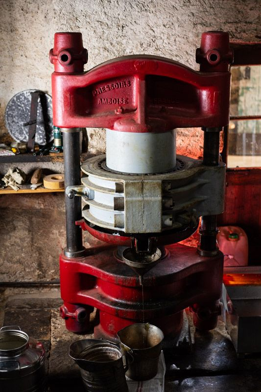
Le tout est pressé lentement grâce à notre presse hydraulique des années 1940.
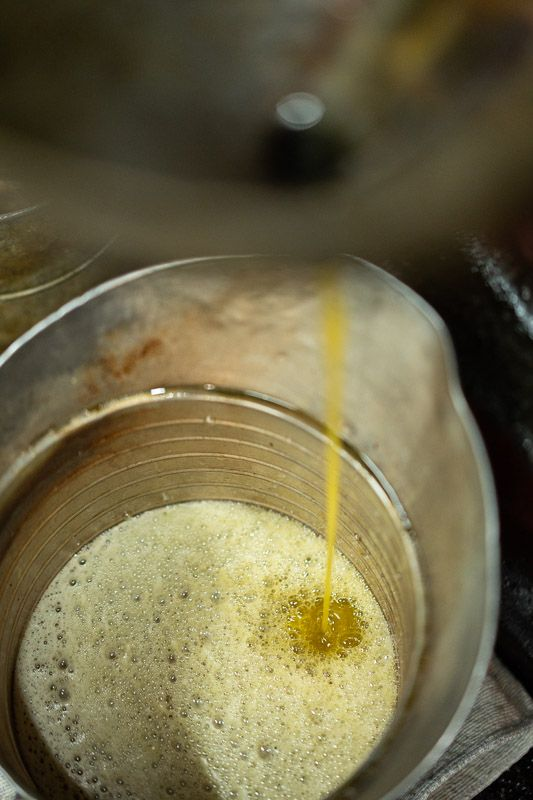
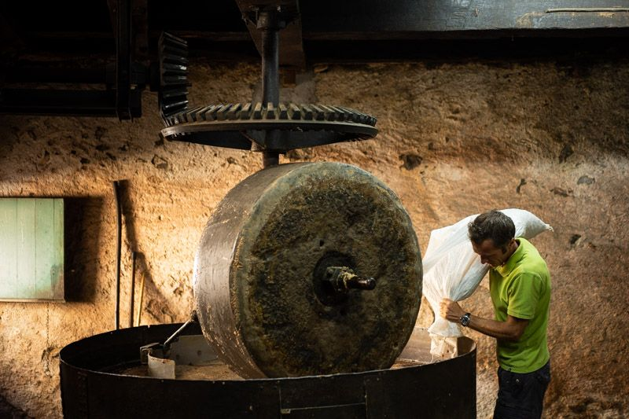
Pressage à façon
Le moulin presse aussi les noix des particuliers et des professionnels. Une certification bio permet aux producteurs bio de le rester après la transformation en huile.
Nos produits
Tous fabriqués artisanalement, suivant une méthode traditionnelle. En vente au moulin, à notre boutique et chez nos commerçants partenaires.
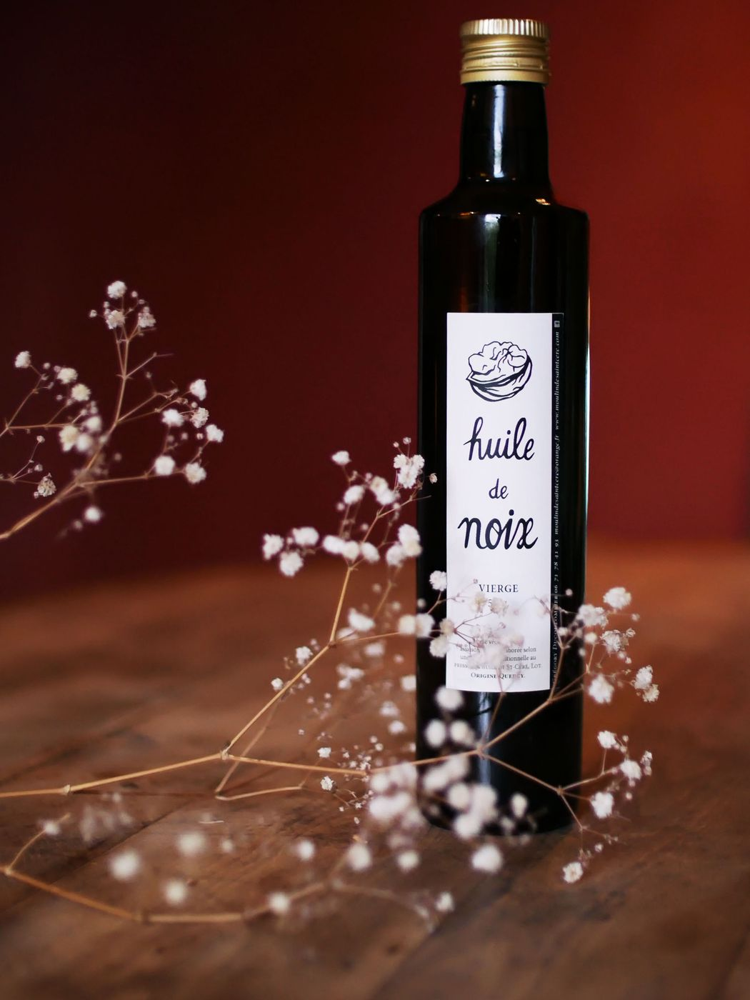
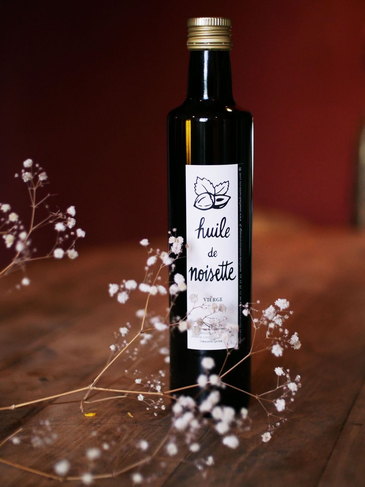
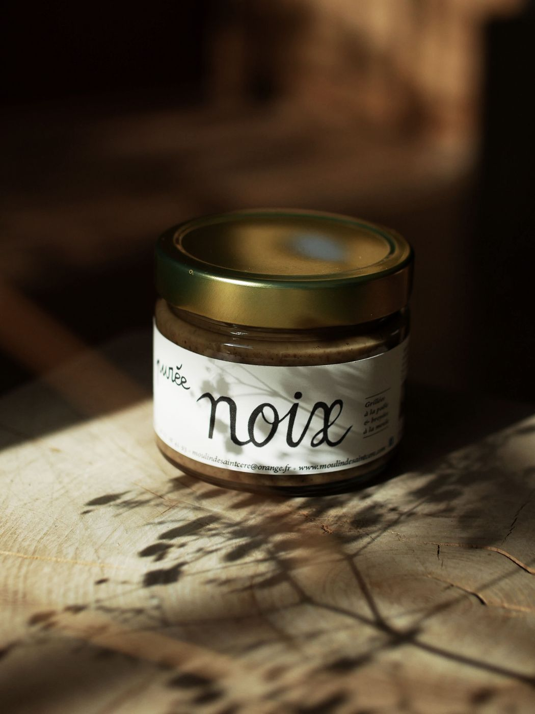
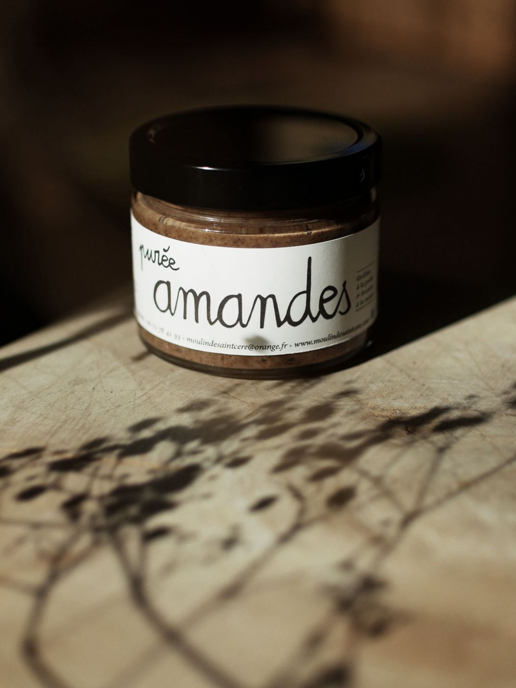
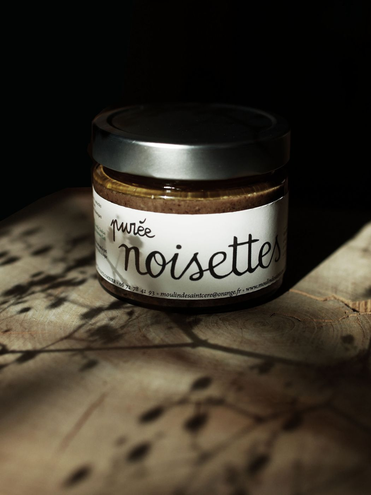
Purées 100 % naturelles, sans huile ni sucre ajoutés : cuisinées à la poêle et broyées à la meule.
Qui sommes-nous ?
Un paysan retraité, lui-même producteur de noix, a fait le pari de faire revivre ce lieu chargé d'histoire(s) et ancré dans une tradition séculaire. Le lieu a été restauré, débarrassé et nettoyé, les outils du début du XXe siècle remis en état de marche. Un « ancien » du moulin a transmis la recette… et naturellement, les gens sont revenus faire presser leurs noix.
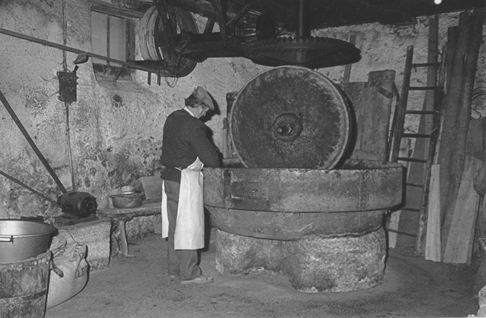
L'atelier
Certains outils ne sont plus utilisés mais sont restés en place, comme autant de témoignages des méthodes et techniques d'autrefois.
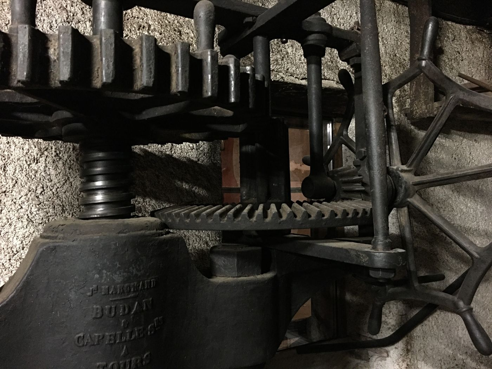
La boutique du moulin
Ouverte depuis décembre 2021, la boutique rend plus accessible la gamme fabriquée à l'atelier. C'est le lien entre le moulin et ses habitués, mais aussi les visiteurs de passage qui ne connaissent pas encore notre activité. On y trouve tout un univers « huiles et fruits secs » : venez découvrir et déguster.
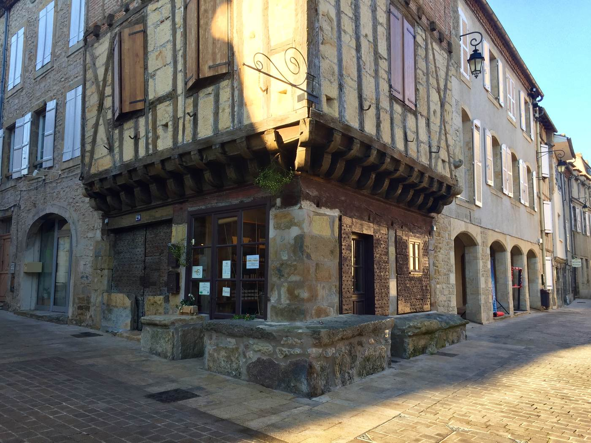
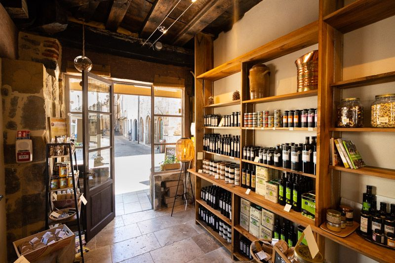
Visite et horaires
Visite libre et gratuite, démonstration et dégustation.
Horaires d'été : du lundi au vendredi, 10h–12h30 et 15h–18h.
D'autres jours et horaires sont possibles sur rendez-vous.
Place du Mercadial, Saint-Céré.
Du mardi au samedi : 10h–12h30 et 15h–18h30.
Visites possibles le dimanche, sur rendez-vous par téléphone.
Contact
Pour un pressage à façon, une visite de groupe ou une commande.